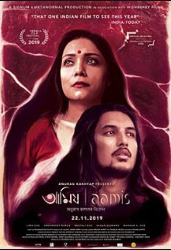
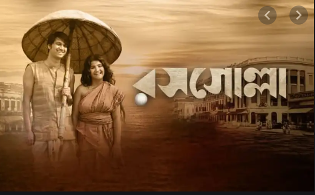
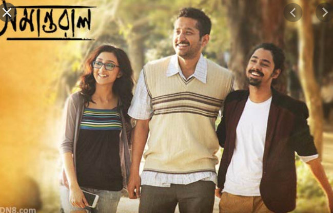
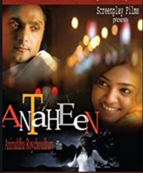
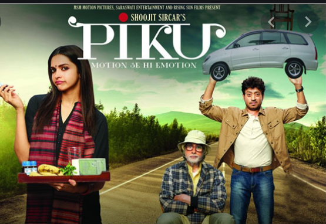

THE FAULT IN OUR STARS

Two cancer patients, Hazel and Water , started their love-life with full of uncertainity.
And the fault in their stars was their physical condition, and soon Water died and left his love for Hazel.
And the fault in their stars was their physical condition, and soon Water died and left his love for Hazel.
AAMIS
A lover wants to do everything to satisfy his/her love.
Here Sumon, an Anthropology Phd. student treated Nirmali ,a pediatrician with his own flesh and their love push themselves in a horrific crime- Cannibalism .
Here Sumon, an Anthropology Phd. student treated Nirmali ,a pediatrician with his own flesh and their love push themselves in a horrific crime- Cannibalism .
ROSOGULLA
Behind every invention , there is an inspiration.
Nobin Chandra Das, a budding sweet maker from Kolkata, inspired by his beloved wife to create a new sweet.
He invented the iconic dessert, Rosogulla.
Nobin Chandra Das, a budding sweet maker from Kolkata, inspired by his beloved wife to create a new sweet.
He invented the iconic dessert, Rosogulla.
SAMANTARAL
Arka met his second uncle Sujan in his maternal uncles' house.
Sujan was mentally ill and used to lock him in a room.
Arka realized that something very wrong has happened to him and the family was hiding a secret.
Finally it had been revealed that uncle Sujan was transgender and the family had always wanted to keep this identity shut from outside world.
Sujan was mentally ill and used to lock him in a room.
Arka realized that something very wrong has happened to him and the family was hiding a secret.
Finally it had been revealed that uncle Sujan was transgender and the family had always wanted to keep this identity shut from outside world.
ANTAHEEN
Abhik, a police officer and Brinda , a journalist used to chat in social media and didn’t know each other in person.
Once they decided to meet, but a sudden accident of Brinda made their love endless before beginning.
Once they decided to meet, but a sudden accident of Brinda made their love endless before beginning.
PIKU
All parents want that their girl will get married in a good family and be fine.
But Piku’s father rejected all the marriage proposals for his daughter.
That’s why, Piku used to think her father selfish and after the death of her father she realized that her father wanted to make her independent and to save her from all the push–back of a married life.
But Piku’s father rejected all the marriage proposals for his daughter.
That’s why, Piku used to think her father selfish and after the death of her father she realized that her father wanted to make her independent and to save her from all the push–back of a married life.